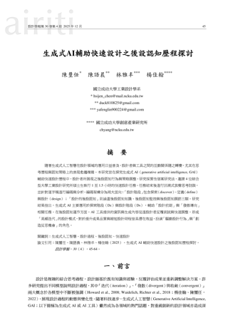

起點：一年級自閉症學生 S1，不想太早給他用平板
參考「雄筆順」：教師可依學生需求自製數位工具（顏國雄，2017）
Karolinska Institutet（2023）提醒數位工具可能削弱學習效果
專家審查意見（提交瑞典教育部）・非實證研究
特殊教育教師如何運用特教專業，引導生成式 AI 將學生的學習需求轉化為漢字部件拼貼教材？
目的：探討引導歷程在人機協作過程中，教師如何處理 AI 之回應並提出修正指令？其決策依據為何？
目的：分析回應處理與決策依據教師的特教專業在 AI 協作開發自編教材中發揮哪些關鍵作用？可歸納出何種實踐模式？
目的：歸納關鍵作用與實踐模式依自然語言提示自動產生內容；輸出仍需專業的人判斷
本研究：Gemini、Claude、ChatGPT（UNESCO, 2023/2025）
機器依人的輸入操作，人再依結果調整
本研究：多輪對話、檢視輸出、下修正指令（Costa et al., 2022，引自丁玉珍，2024）
由筆畫組成、能組配漢字的構字單位；分成字／非字部件
本研究：拆解生字作為拼貼素材（莊德明、鄧賢瑛，2009）
教師依課程需求「編」或「寫」的教材
本研究：與 AI 協作產出的部件貼紙＋學習單（陳伯璋等人，2016）
學生書寫常缺漏筆畫、部件誤用；市售教材難對應，自編受限於時間與技術
探討的是設計歷程，不是學生學習成效；引導與判斷為教師內在的專業思考
三個 AI 階段＋兩次試用，每次修改都依前次試用或測試調整，並留有 GitHub 紀錄
教材持續變動，無法作固定處理；調查難以呈現單一教師每一回合的判斷
計畫→行動→觀察→反思
自我反思的螺旋（Kemmis 等人，2014）
不是「一大輪」，
而是發生在每一回合的協作裡
Gemini・Claude・ChatGPT
三階段＝小循環的累積
例：5/8 試用未達預期 → 轉給中年級
9/22–9/25 試作缺件補字 → 還原 9/14 版
問題一 需求 → 引導
圖中由左至中的路徑
問題二 處理回應、修正指令
圖中的回饋循環
問題三 特教專業的關鍵作用
跨越整個架構
臺南市東區某國小資源班｜研究對象是研究者本人；學生操作只用來說明教材修正的原因
S1＋另 4 名低年級，共 5 人
Gemini 階段版本・一課生字
結果未達預期：
S2–S5，四名四年級
115 年 9–12 月・每週四操作貼紙
4 月至 5 月上旬
5/12 至 8 月下旬
8/28 至 9/14
ChatGPT 版
主要功能架構確立
9535e22
ChatGPT Pro
試作「缺件補字」
8e6bfd7
上傳 Claude 版
介面過於複雜
2a57ee6
還原為
9/14 版本
99f4242
ChatGPT Pro
版面修正・定版
9943494
為什麼停？功能越加越多、按鈕越來越多 → 對初次使用的老師是負擔
甲・教學搭檔（特教 20 年以上）
學生需求判斷、解釋差異化
乙・研究所同儕（有碩論經驗）
方法嚴謹性、抽檢編碼
Gemini／Claude
／ChatGPT
共 42 次修改
5/8；9–12 月
事後回顧
輔助詮釋
前三類＝當下紀錄；札記＝事後回顧
分析單位：Gemini、Claude 以「回合」；ChatGPT 以「一次修改」
另有諍友檢核表（甲、乙）
教學／材料／測試／諮詢，計次只呈現分布
直接採用／修正後採用／未採用／
開發後未使用或移除
比較三階段 → 關鍵作用與實踐模式
分析步驟參照林金定等人（2005）
陳璽任、陳語晨、林雅丰、楊佳翰（2025）。生成式AI輔助快速設計之後設認知歷程探討。設計學報，30(4)，45-64。THCI

原文首頁 ↗AI 輸出品質取決於教師如何提問與引導
生成內容取決於設計師輸入的指令與限制 頁 47（引 Chiou et al., 2023）
教材適切性與差異化，仍仰賴教師專業判斷
需專業知識或經驗判斷時，設計者保有較高自主性 頁 57–58
缺乏以特教教師為主體、記錄協作歷程的研究
以質性個案研究分析使用 AI 的思考歷程：高頻迭代、創造反思機會 頁 45、58
選擇理由：三篇候選中最貼近核心「教師與生成式 AI 協作之歷程」・THCI 期刊
高頻迭代：AI 結果促使快速修改、再測試（頁 58）
每回合的計畫→行動→觀察→反思小循環（第一節）
編碼架構：設計階段＋後設認知（知識／監控／調節）（頁 49–50）
對話紀錄編碼：四類引導類型、處理方式與決策依據
限制：未完整揭露 ChatGPT 版本（頁 59）
記錄各工具版本／帳號（表 3-8）與 GitHub 版本碼（表 3-4）
差異：4 位工業設計碩士生、1–1.5 小時快速設計（頁 45、50）｜本研究：研究者本人（特教教師）、4–9 月教材開發